讲座 0
欢迎
- This year, we’ll be in the Loeb Drama Center 在 哈佛大学, where, thanks to our 关闭 collaboration with the American Repertory Theater, we have an amazing stage and even props for demonstrations.
- We turned an 18th century watercolor painting of Harvard’s campus by a student, Jonathan Fisher, into the backdrop for the stage.
- Twenty years ago as an undergraduate, David overcame his own trepidation, stepping outside his comfort zone and took CS50 himself, finding that the 课程 was 较少 关于 编程 than 关于 问题 solving.
- In fact, two-thirds of CS50 students have never taken a 计算机科学 课程 before.
- And importantly, too:
what ultimately matters in this 课程 is not so much where you 结束 up relative to your classmates but where you 结束 up relative to yourself when you began
- We’ll 开始 off the 课程 recreating a component of a Super 马里奥 game, later building a web application called CS50 金融 that will allow users to buy and sell stocks virtually, and ending the 课程 with the creation of your very own 最终项目.
What is 计算机科学?
- 计算机科学 is fundamentally 问题 solving.
- We can think of 问题 solving as the process of taking some input (details 关于 our 问题) and generate some output (the solution to our 问题). The “black box” in the middle is 计算机科学, or the code we’ll learn to write.
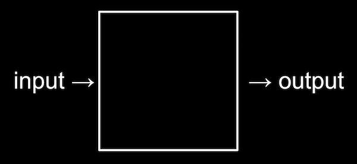
- To begin doing that, we’ll need a way to represent inputs and outputs, so we can store and work with information in a standardized way.
Representing numbers
- We might 开始 with the task of taking attendance by counting the number of people in a room. With our hand, we might raise one finger 在 a 时间 to represent each person, but we won’t be able to count very high. This system is called unary, where each digit represents a single value of one.
- We’ve probably learned a 更多 efficient system to represent numbers, where we have ten digits, 0 through 9:
0 1 2 3 4 5 6 7 8 9
- This system is called decimal, or base 10, since there are ten different values that a digit can represent.
- Computers use a simpler system called binary, or base two, with only two possible digits, 0 and 1.
- Each binary digit is also called a bit.
- Since computers run on electricity, which can be turned on or off, we can conveniently represent a bit by turning some switch on or off to represent a 0 or 1.
- With one light bulb, for 示例, we can turn it on to count to 1.
- With three light bulbs, we can turn them on in different patterns, and count from 0 (with all three off) to 7 (with all three on):
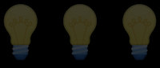
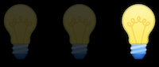
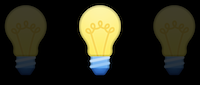
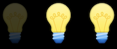
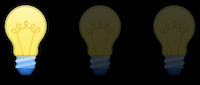
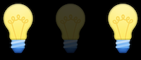
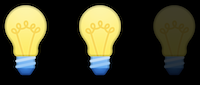
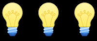
- Inside modern computers, there are not light bulbs but million of tiny switches called transistors that can be turned on and off to represent different values.
- For 示例, we know the following number in decimal represents one hundred and twenty-three.
1 2 3
- The
3is in the ones column, the2is in the tens column, and the1is in the hundreds column. - So
123is100×1 + 10×2 + 1×3 = 100 + 20 + 3 = 123. - Each place for a digit represents a power of ten, since there are ten possible digits for each place. The rightmost place is for 100, the middle one 101, and the leftmost place 102:
102 101 100 1 2 3
- The
- In binary, with just two digits, we have powers of two for each place value:
22 21 20 # # #
- 这是 equivalent to:
4 2 1 # # #
- 这是 equivalent to:
- With all the light bulbs or switches off, we would still have a value of 0:
4 2 1 0 0 0
- Now if we change the binary value to, say,
0 1 1, the decimal value would be 3, since we add the 2 and the 1:4 2 1 0 1 1
- If we had several 更多 light bulbs, we might have a binary value of
110010, which would have the equivalent decimal value of50:32 16 8 4 2 1 1 1 0 0 1 0
- Notice that
32 + 16 + 2 = 50.
- Notice that
- With 更多 bits, we can count up to even higher numbers.
Text
- To represent letters, all we need to do is decide how numbers map to letters. Some humans, many years ago, collectively decided on a standard mapping of numbers to letters. The letter “A”, for 示例, is the number 65, and “B” is 66, and so on. By using context, like whether we’re looking 在 a spreadsheet or an 电子邮件, different programs can interpret and display the same bits as numbers or text.
- The standard mapping, ASCII, also includes lowercase letters and punctuation.
- If we received a text message with a pattern of bits that had the decimal values
72,73, and33, those bits would map to the lettersHI!. Each letter is typically represented with a pattern of eight bits, or a byte, so the sequences of bits we would receive are01001000,01001001, and00100001.- We might already be familiar with using bytes as a unit of measurement for data, as in megabytes or gigabytes, for millions or billions of bytes.
- With eight bits, or one byte, we can have 28, or 256 different values (including zero). (The highest value we can count up to would be 255.)
- Other characters, such as letters with accent marks and symbols in other languages, are part of a standard called Unicode, which uses 更多 bits than ASCII to accommodate all these characters.
- When we receive an emoji, our computer is actually just receiving a number in binary that it then maps to the image of the emoji based on the Unicode standard.
- For 示例, the “face with tears of joy” emoji is just the bits
000000011111011000000010:
- For 示例, the “face with tears of joy” emoji is just the bits
- When we receive an emoji, our computer is actually just receiving a number in binary that it then maps to the image of the emoji based on the Unicode standard.
Images, 视频, sounds
- An image, like the picture of the emoji, are made up of colors.
- With only bits, we can map numbers to colors as well. There are many different systems to represent colors, but a common one is RGB, which represents different colors by indicating the amount of red, green, and blue within each color.
- For 示例, our pattern of bits earlier,
72,73, and33might indicate the amount of red, green, and blue in a color. (And our programs would know those bits map to a color if we opened an image file, as opposed to receiving them in a text message.)- Each number might be a byte, with 256 possible values, so with three bytes, we can represent millions of colors. Our three bytes from above would represent a dark shade of yellow:
- Each number might be a byte, with 256 possible values, so with three bytes, we can represent millions of colors. Our three bytes from above would represent a dark shade of yellow:
- The dots, or squares, on our screens are called pixels, and images are made up of many thousands or millions of those pixels as well. So by using three bytes to represent the color for each pixel, we can create images. We can see pixels in an emoji if we Zoom in, for 示例:

- The resolution of an image is the number of pixels there are, horizontally and vertically, so a high-resolution image will have 更多 pixels and require 更多 bytes to be stored.
- 视频 are made up of many images, changing multiple times a second to give us the appearance of motion, as an 旧内容-fashioned flipbook might do.
- Music can be represented with bits, too, with mappings of numbers to 笔记 and durations, or 更多 complex mappings of bits to sound frequencies 在 each moment of 时间.
- File formats, like JPEG and PNG, or Word or Excel documents, are also based on some standard that some humans have agreed on, for representing information with bits.
算法
- Now that we can represent inputs and outputs, we can work on 问题 solving. The black box earlier will contain 算法, step-by-step instructions for solving 问题:

- Humans can follow 算法 too, such as recipes for cooking. When 编程 a computer, we need to be 更多 precise with our 算法 so our instructions aren’t ambiguous or misinterpreted.
- We might have an application on our phones that store our contacts, with their names and 电话 numbers sorted alphabetically. The 旧内容-school equivalent might be a 电话 book, a printed copy of names and 电话 numbers.
- Our input to the 问题 of finding someone’s number would be the 电话 book and a 姓名 to look for. We might 打开 the book and 开始 from the first page, 在找 a 姓名 one page 在 a 时间. This algorithm would be correct, since we will eventually find the 姓名 if it’s in the book.
- We might flip through the book two pages 在 a 时间, but this algorithm will not be correct since we might skip the page with our 姓名 on it. We can fix this bug, or mistake, by going 返回 one page if we flipped too far, since we know the 电话 book is sorted alphabetically.
- Another algorithm would be opening the 电话 book to the middle, decide whether our 姓名 will be in the left half or right half of the book (because the book is alphabetized), and reduce the size of our 问题 by half. We can repeat this until we find our 姓名, dividing the 问题 in half each 时间. With 1024 pages to 开始, we would only need 10 steps of dividing in half before we have just one page remaining to check. We can see this visualized in an animation of dividing a 电话 book in half repeatedly, compared to the animation of searching one page 在 a 时间.
- In fact, we can represent the efficiency of each of those 算法 with a chart:

- Our first solution, searching one page 在 a 时间, can be represented by the red line: our 时间 to solve increases linearly as the size of the 问题 increases. n is a some number representing the size of the 问题, so with n pages in our 电话 books, we have to take up to n steps to find a 姓名.
- The second solution, searching two pages 在 a 时间, can be represented by the yellow line: our slope is 较少 steep, but still linear. Now, we only need (roughly) n / 2 steps, since we flip two pages 在 a 时间.
- Our final solution, dividing the 电话 book in half each 时间, can be represented by the green line, with a fundamentally different relationship between the size of the 问题 and the 时间 to solve it: logarithmic, since our 时间 to solve rises 更多 and 更多 slowly as the size of the 问题 increases. In other words, if the 电话 book went from 1000 to 2000 pages, we would only need one 更多 step to find our 姓名. If the size doubled again from 2000 to 4000 pages, we would still only need one 更多 step. The green line is labeled log2 n, or log base 2 of n, since we’re dividing the 问题 by two with each step.
- When we write programs using 算法, we generally care not just how correct they are, but how well-designed they are, considering factors such as efficiency.
Pseudocode
- We can write pseudocode, which is a representation of our algorithm in precise English (or some other human language):
1 Pick up phone book 2 Open to middle of phone book 3 Look at page 4 If person is on page 5 Call person 6 Else if person is earlier in book 7 Open to middle of left half of book 8 Go back to line 3 9 Else if person is later in book 10 Open to middle of right half of book 11 Go back to line 3 12 Else 13 Quit
- With these steps, we check the middle page, decide what to do, and repeat. If the person isn’t on the page, and there’s no 更多 pages in the book left, then we stop. And that final case is particularly important to remember. When other programs on our computers forgot that final case, they might appear to freeze or stop responding, since they’ve encountered a case that wasn’t accounted for, or continue to repeat the same work over and over behind the scenes without making any progress.
- Some of these lines 开始 with verbs, or actions. We’ll 开始 calling these functions:
1 Pick up phone book 2 Open to middle of phone book 3 Look at page 4 If person is on page 5 Call person 6 Else if person is earlier in book 7 Open to middle of left half of book 8 Go back to line 3 9 Else if person is later in book 10 Open to middle of right half of book 11 Go back to line 3 12 Else 13 Quit
- We also have branches that lead to different paths, like forks in the road, which we’ll call conditions:
1 Pick up phone book 2 Open to middle of phone book 3 Look at page 4 If person is on page 5 Call person 6 Else if person is earlier in book 7 Open to middle of left half of book 8 Go back to line 3 9 Else if person is later in book 10 Open to middle of right half of book 11 Go back to line 3 12 Else 13 Quit
- And the 问题 that decide where we go are called Boolean expressions, which eventually result in a value of yes or no, or true or false:
1 Pick up phone book 2 Open to middle of phone book 3 Look at page 4 If person is on page 5 Call person 6 Else if person is earlier in book 7 Open to middle of left half of book 8 Go back to line 3 9 Else if person is later in book 10 Open to middle of right half of book 11 Go back to line 3 12 Else 13 Quit
- Lastly, we have words that create cycles, where we can repeat parts of our program, called loops:
1 Pick up phone book 2 Open to middle of phone book 3 Look at page 4 If person is on page 5 Call person 6 Else if person is earlier in book 7 Open to middle of left half of book 8 Go back to line 3 9 Else if person is later in book 10 Open to middle of right half of book 11 Go back to line 3 12 Else 13 Quit
Scratch
- We can write programs with the building blocks we just discovered:
- functions
- conditions
- Boolean expressions
- loops
- And we’ll discover additional features including:
- variables
- threads
- events
- …
- Before we learn to use a text-based 编程 language called C, we’ll use a graphical 编程 language called Scratch, where we’ll drag and drop blocks that contain instructions.
- A simple program in C that prints out “你好, 世界”, would look like this:
#include <stdio.h> int main(void) { printf("hello, world\n"); }- There’s a lot of symbols and syntax, or arrangement of these symbols, that we would have to figure out.
- The 编程 environment for Scratch is a little 更多 friendly:
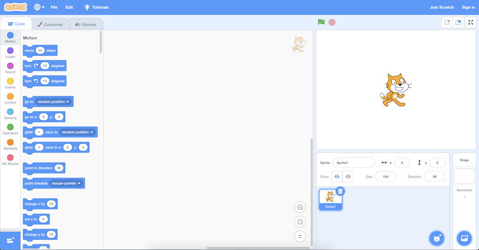
- On the top right, we have a stage that will be shown by our program, where we can add or change backgrounds, characters (called sprites in Scratch), and 更多.
- On the left, we have puzzle pieces that represent functions or variables, or other concepts, that we can drag and drop into our instruction area in the center.
- On the bottom right, we can add 更多 characters for our program to use.
- We can drag a few blocks to make Scratch say “你好, 世界”:
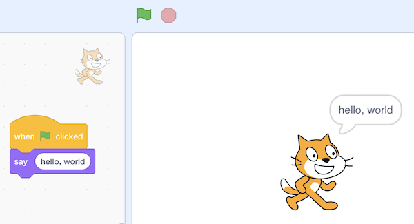
- The “when green flag clicked” block refers to the 开始 of our program (since there is a green flag above the stage that we can use to 开始 it), and below it we’ve snapped in a “say” block and typed in “你好, 世界”. And we can figure out what these blocks do by exploring the interface and experimenting.
- We can also drag in the “ask and wait” block, with a 问题 like “What’s your 姓名?”, and combine it with a “say” block for the 答案:
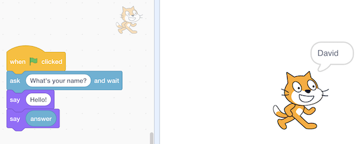
- The “答案” block is a variable, or value, that stores what the program’s user types in, and we can place it in a “say” block by draggind and dropping as well.
- But we didn’t wait after we said “你好” with the first block, so we can use the “join” block to combine two phrases so our cat can say “你好, David”:
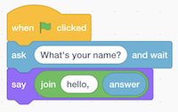
- When we try to nest blocks, or place them one inside the other, Scratch will help us by expanding places where they can be used.
- In fact, the “say” block itself is like an algorithm, where we provided an input of “你好, 世界” and it produced the output of Scratch (the cat) “saying” that phrase:
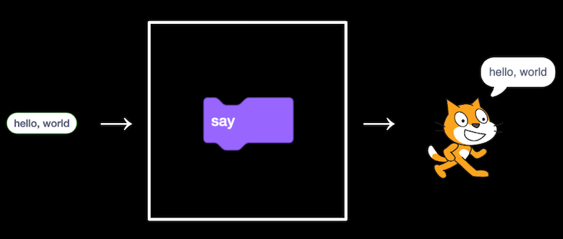
- The “ask” block, too, takes in an input (the 问题 we want to ask), and produces the output of the “答案” block:
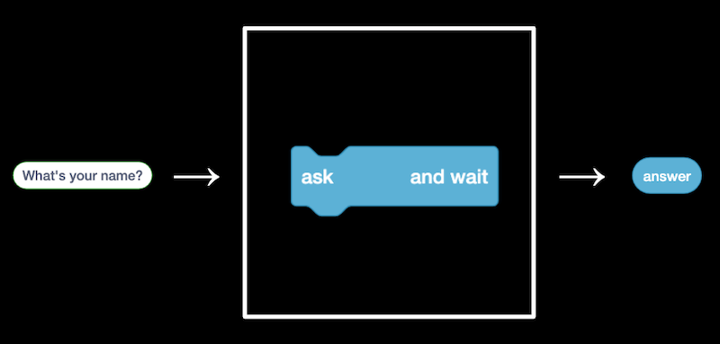
- We can then use the “答案” block along with our own text, “你好, “, as two inputs to the join algorithm …
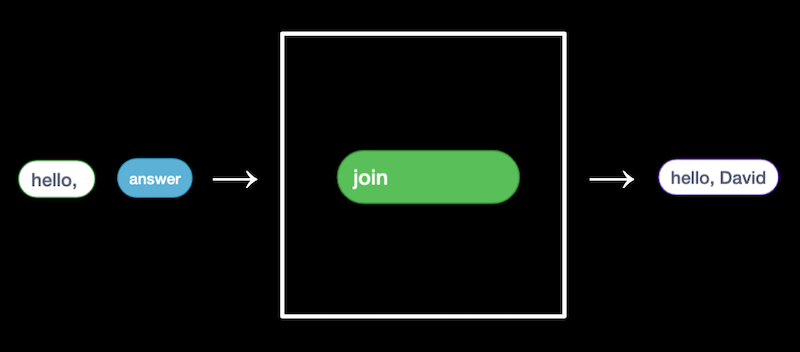
- … the output of which we pass can as input to the “say” block:
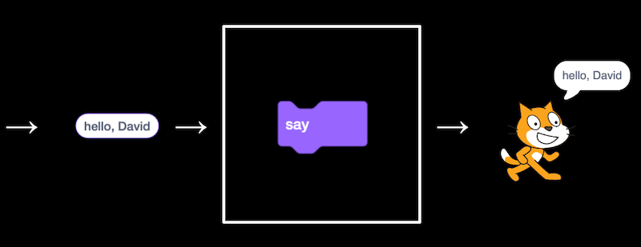
- 在 the bottom left of the screen, we see an icon for extensions, and one of them is called Text to Speech. After we add it, we can use the “speak” block to hear our cat speak:
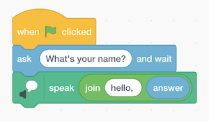
- The Text to Speech extension, thanks to the cloud, or computer servers on the 互联网, is converting our text to 音频.
- We can try to make the cat say meow:
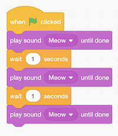
- We can have it say meow three times, but now we’re repeating blocks over and over.
- Let’s use a loop, or a “repeat” block:
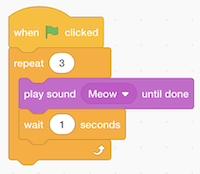
- Now our program achieves the same results, but with fewer blocks. We can consider it to have a better design: if there’s something we wanted to change, we would only need to change it in one place instead of three.
- We can have the cat point towards the mouse and move towards it:
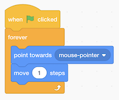
- We try out the Pen extension, by using the “pen down” block with a condition:
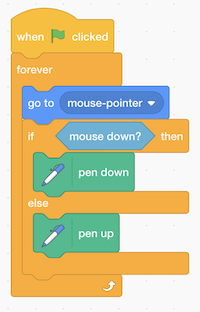
- Here, we move the cat to the mouse pointer, and if the mouse is clicked, or down, we put the “pen down”, which draws. Otherwise, we put the pen up. We repeat this very quickly, over and over again, so we 结束 up with the effect of drawing whenever we have the mouse held down.
- Scratch also has different costumes, or images, that we can use for our characters.
- We’ll make a program that can count:
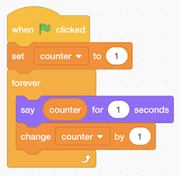
- Here,
counteris a variable, the value of which we can set, use, and change.
- Here,
- We look 在 some 更多 programs, like bounce, where the cat moves 返回 and forth on the screen forever, by turning around whenever we’re 在 the edge of the screen.
- We can improve the animation by having the cat change to a different costumes after every 10 steps in bounce1. Now when we click the green flag to run our program, we see the cat alternate the movement of its legs.
- We can even record our own sounds with our computer’s microphone, and play them in our program.
- To build 更多 and 更多 complex programs, we 开始 with each of these simpler features, and layer them atop one another.
- We can also have Scratch meow if we touch it with the mouse pointer, in pet0.
- In bark, we have not one but two programs in the same Scratch 项目. Both of these programs will run 在 the same 时间 after the green flag is clicked. One of these will play a sea lion sound if the
mutedvariable is set tofalse, and the other will set themutedvariable from eithertruetofalse, orfalsetotrue, if the space key is pressed. - Another extension looks 在 the 视频 as captured by our computer’s webcam, and plays the meow sound if the 视频 has motion above some threshold.
- With multiple sprites, or characters, we can have different sets of blocks for each of them:
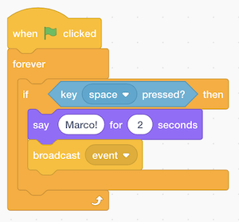
- For one puppet, we have these blocks that say “Marco!”, and then a “broadcast event” block. This “event” is used for our two sprites to communicate with each other, like sending a message behind the scenes. So our other puppet can just wait for this “event” to say “Polo!”:
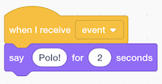
- For one puppet, we have these blocks that say “Marco!”, and then a “broadcast event” block. This “event” is used for our two sprites to communicate with each other, like sending a message behind the scenes. So our other puppet can just wait for this “event” to say “Polo!”:
- We can use the Translate extension to say something in other languages, too:
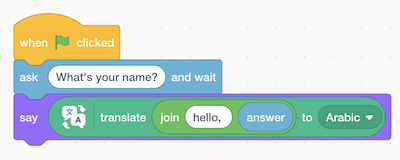
- Here, the output of the “join” block is use as the input to the “translate” block, the output of which is passed as input to the “say” block.
- Now that we know some basics, we can think 关于 the design, or quality of our programs. For 示例, we might want to have the cat meow three times with the “repeat” block:
- We can use abstraction, which simplifies a 更多 complex concept. In this case, we can define our own “meow” block in Scratch, and reuse it elsewhere in our program, as seen in meow3. The advantage is that we don’t need to know how meowing is implemented, or written in code, but rather just use it in our program, making it 更多 readable.
- We can even define a block with an input in meow4, where we have a block that make the cat meow a certain number of times. Now we can reuse that block in our program to meow any number of times, much like how we can use the “translate” or “speak” blocks, without knowing the 实现细节, or how the block actually works.
- We take a look 在 a few 更多 demos, including Gingerbread tales remix and Oscartime, both of which combine loops, conditions, and movement to make an interactive game.
- Oscartime was actually made by David many years ago, and he started by adding one sprite, then one feature 在 a 时间, and so on, until they added up to the 更多 complicated program.
- A former student, Andrew, created Raining Men. Even though Andrew ultimately ended up not pursuing 计算机科学 as a profession, the 问题-solving skills, 算法, and ideas we’ll learn in the 课程 are applicable everywhere.
- Until 下一页 时间!